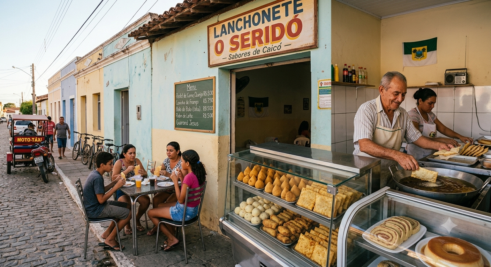
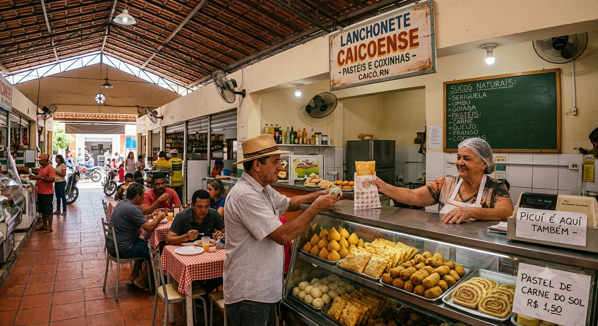
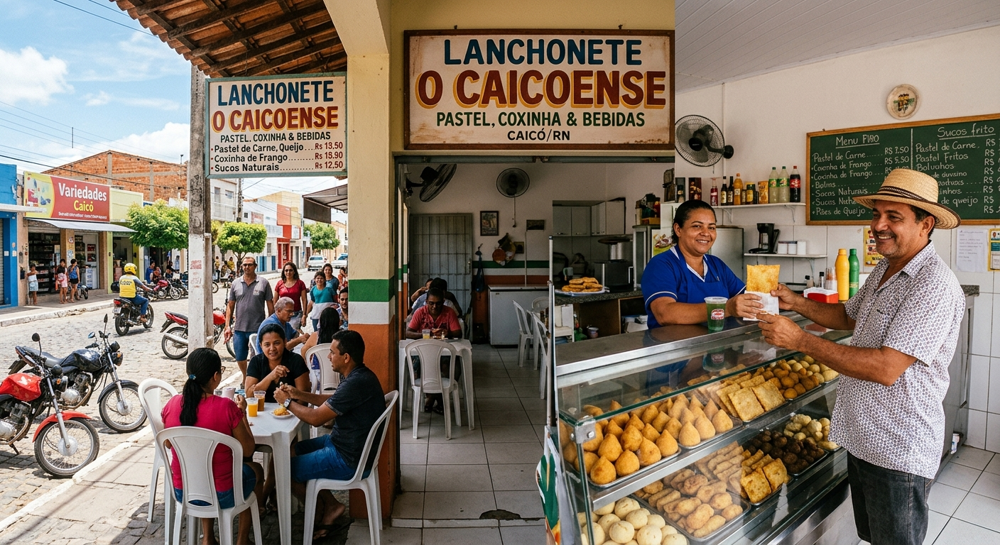

NOSSAS UNIDADES

Unidade Seridó
Endereço: Rua dos Sabores, 123 - Caicó/RN
Horário: Qua a Seg, 17h às 22h
Especialidade: sanduíches e petiscos

Unidade Caicoense - Pasteis
Endereço: Av. dos Pasteis, 456 - Caicó/RN
Horário: Qua a Seg, 17h às 22h
Especialidade: pastéis e coxinhas

Unidade O Caicoense
Endereço: Praça Central, 789 - Caicó/RN
Horário: Qua a Seg, 17h às 22h
Especialidade: pastéis, coxinhas e bebidas